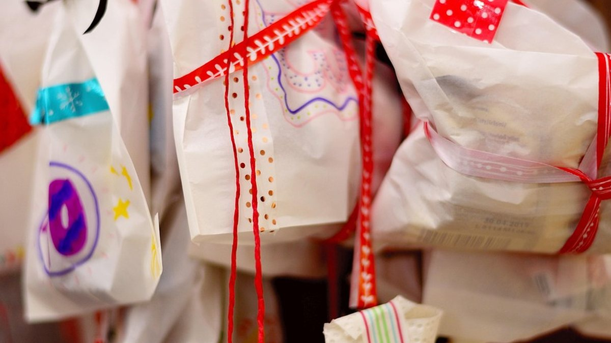

November 27, 2026 · By Pixel Punk Studio
The Advent calendars in the stores keep getting more expensive, and most of them hold 24 more pieces of sugar in a month that already has plenty. Yet the part everyone loves costs nothing: opening one small surprise every day and counting down together. A paper calendar keeps that part. With a stack of envelopes and a few printed pages, you can build one in an evening, and it suits anyone from a five-year-old to a grandparent.
What you need
- 24 small envelopes or paper bags, or just 24 sheets of paper folded and tied with string.
- Printed pages. Plain letter paper is fine, and the plan below uses free pages only.
- Numbers from 1 to 24, written by hand or added with stickers by the kids.
- A place to hang or stack them: a string with clothespins, a basket or a shelf.
- Pencils and crayons kept beside the calendar, so nobody has to go looking.
How to build it in one evening
- Choose your start date. Most calendars run from December 1 to 24, so that is the simplest choice. If you start late, make fewer envelopes and count down from there.
- Print the pages. Print a set of each page per person who will take part, and print a little ahead of time in case the printer runs out of ink.
- Fold each page in thirds. A letter sheet folded this way fits a standard business envelope; fold it once more for smaller ones. Take out any solution pages and keep them in one folder.
- Mix in small treats. Add a slip of paper to some envelopes: "pick tonight's movie" or "bake cookies this weekend". A treat you can do together costs little and adds variety.
- Number the envelopes. Put quick pages on school or work days, and longer ones on weekends.
- Hang them where you'll see them. By the breakfast table or the tree is ideal, because a calendar you walk past every day is one you won't forget.
A 24-day plan with free pages
Our free pages can fill the calendar, with homemade fun on the other days. Every puzzle and coloring page below is free to print from our website, and some are worth printing twice.
- December 1 to 6, easy start: Christmas Cookie Swap jumbo word search, a puppy and kitten coloring page, a family joke slip, Candlelit Evenings word search, a "make a paper chain" slip, and a very easy sudoku for the weekend.
- December 7 to 12, winter week: Stargazing word search (then go outside and look up), cardinals coloring page, a "write a card to someone" slip, the bug word search for little ones, a "hot chocolate tonight" slip, and a Highland cow word search with its fun fact to read aloud.
- December 13 to 18, make your own: a blank page and our guide to making a word search by hand so that each person can make one for another, the ladybug coloring page, a "sing one carol" slip, a second very easy sudoku, a "decorate one window" slip, and the Leonardo da Vinci word search for curious grown-ups.
- December 19 to 24, the last stretch: the 1950s Christmas TV coloring page with its memory question, a "family movie" slip, a homemade word search from last week, a "bake something" slip, the Nativity word search, and the Christmas Eve word search to finish together on the 24th.
Adapt it for every age
- Ages 4 to 7: mostly coloring pages and the 8-word bug word search, with a grown-up reading the words aloud.
- Ages 8 to 12: the farm word search and sudoku, plus a race against a grown-up on weekends.
- Teens: let them swap envelopes, or set a family record for the fastest word search.
- Seniors: choose large print or the 30-point jumbo page, and mail a calendar to a grandparent with a note to call you on the day you've both opened the same page.
When life gets in the way
You will miss a day or two, and that's fine. Let the envelopes wait and open two together on the weekend. A calendar is meant to be a small pleasure and shouldn't feel like one more December chore. If a page doesn't appeal to anyone, swap it for a treat slip and move on.
Free pages to print tonight
Start with the Christmas Eve, Nativity and Cookie Swap word searches, which all come free. If you'd rather have a whole book of them, or need a Christmas gift for a puzzler, Cozy Christmas Word Search has 55 large print puzzles, Jumbo Christmas Word Search has 100 puzzles in 30-point letters, and Cozy Christmas Coloring Book has 50 peaceful scenes to color.